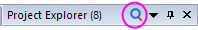
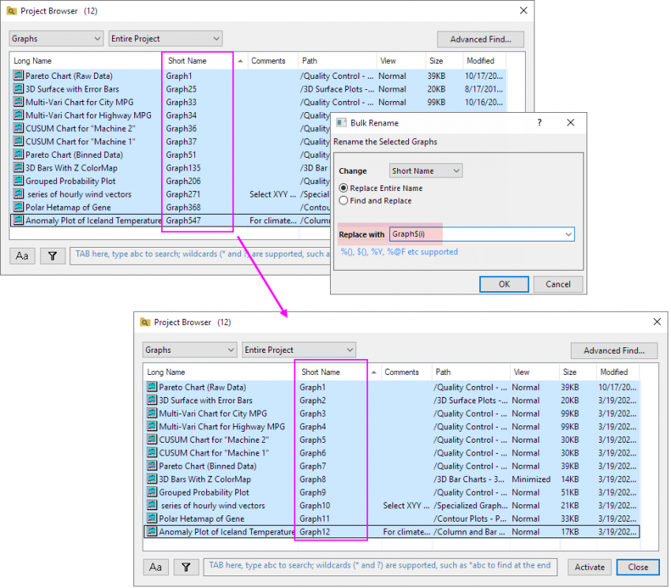
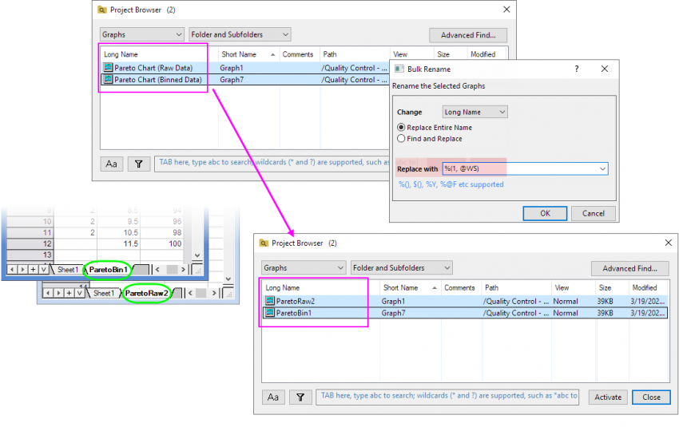
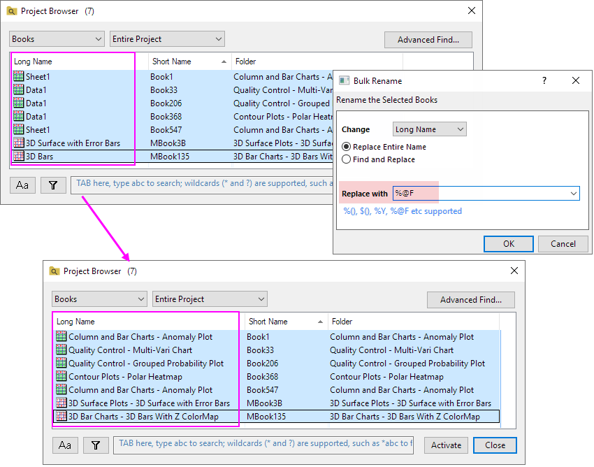

Ein Doppelklick auf die leere Fläche innerhalb des Projektbrowsers kann den Dialog schließen.
Origin unterstützt einen Projektbrowser, um zwischen Arbeitsmappen, Grafiken und Blättern zu navigieren. Sie können auch nach der Zeichenkette oder den numerischen Daten im Projekt, einschließlich Metadaten, Datenzellen und Diagrammobjekt, suchen.
Wählen Sie eine der folgenden Methoden, um den Dialog '''Projektbrowser''' zu öffnen:

oben im Projekt Explorer. OderEin Doppelklick auf die leere Fläche innerhalb des Projektbrowsers kann den Dialog schließen. |
Verwenden Sie die Auswahlliste, um Fenster//Fenstertyp/Blätter/Spalten/Ordner festzulegen, die im Projektbrowser aufgelistet sind.
Verwenden Sie die Auswahlliste, um den Bereich der Fenster/Spalten/Ordner zu filtern.

| Gesamtes Projekt | Die Fenster/Spalten/Ordner im gesamten Projekt werden aufgelistet. |
|---|---|
| Ordner und Unterordner | Die Fenster/Spalten/Ordner im aktiven Ordner und seinen Unterordnern werden aufgelistet. |
| Ordner | Nur die Fenster/Spalten/Ordner im aktiven Ordner werden aufgelistet. |
Klicken Sie auf Erweiterte Suche, um den Dialog Suchen zu öffnen.
Klicken Sie auf die Schaltfläche In Projektdateien suchen ..., um den Dialog In Projektdateien suchen zu öffnen.
Klicken Sie mit der rechten Maustaste auf den Bereich des Spaltenheaders dieser Liste, um ein Kontextmenü anzuzeigen. Die Liste ist objektabhängig.
Wenn Sie Folgendes ausgewählt haben ...
| Fenster/Diagramm | Mappen | Spalten |
|---|---|---|
 |
 |
 |
| Blätter | Ordner | Notizen |
 |
! |
 |
Kontextmenüs:
|
| Zeigen | Die ausgewählten Fenster/Spalten werden gezeigt, wenn sie verborgen sind. |
|---|---|
| Verbergen | Die ausgewählten Fenster/Spalten werden verborgen. |
| Löschen | Die ausgewählten Fenster/Blätter/Spalten/Ordner werden gelöscht. |
| Umbenennen | Benennen Sie den Langnamen von Fenster/Blatt/Spalte um. |
| Name und Kommentare | Der Dialog Umbenennen wird geöffnet.
|
| Stapelumbenennung | Siehe unten den Abschnitt Stapelumbenennung. |
| Formel ändern | Siehe unten den Abschnitt Formel ändern. |
| Operationen entfernen | Setzen Sie die Neuberechnung auf Kein für die Spalten im Arbeitsblatt (das grüne Schloss wird entfernt). Der Modus Neuberechnung zeigt Kein an. In diesem Dialog können Sie mehrere Zeilen (mehrere Spalten im Arbeitsblatt) auswählen, um ihre Operation zusammen zu entfernen. |
| Dialog mit Doppelklick geöffnet halten | Wenn Sie doppelt auf die Zeile klicken, um Fenster/Blatt/Spalte/Ordner zu aktivieren, bleibt der Dialog des Projektbrowsers geöffnet. |
| Eingebettete Fenster verbergen | Verbergen Sie die eingebetteten Fenster in der Liste. |
| Ergebnisblätter verbergen | Wenn die Blätter im Projektbrowser gezeigt werden, aktivieren Sie diese Option, um die Analyseergebnisblätter zu verbergen. |
| Quellpfad zeigen | Siehe unten den Abschnitt Quellpfad zeigen. |
| Nur Spiegelspalten/ Nur Quelle der Spiegel/ Zur Spiegelquelle gehen/ In Spaltenformel umwandeln/ Spiegelung entfernen/ Zu Spiegel gehen/ Alle Spiegel entfernen |
Verfügbar nur für Spiegelspalten und ihre Quellspalten. Siehe unten den Abschnitt Spiegelspalten. |
Wählen Sie mehrere Zeilen aus und klicken Sie mit der rechten Maustaste, um Stapelumbenennung auszuwählen und den Dialog zu öffnen. Sie können in diesem Dialog mehrere Fenster/Blätter/Spalten/Ordner umbenennen.
| Ändern | Sie können Langname oder Kurzname für die Fenster ändern. Sie können Blattname oder Blattbeschriftung für die Spalten ändern. |
|---|---|
| Ganzen Namen ersetzen | Der ganze Name der Fenster/Blätter/Spalten/Ordner wird ersetzt. |
| Suchen und Ersetzen | Suchen Sie nach der festgelegten Zeichenkette im Namen der Fenster/Blätter/Spalten/Ordner und ersetzen Sie diese Zeichenkette dann. |
| Suchen | Wenn die Option Suchen und Ersetzen aktiviert ist, wird dieses Bearbeitungsfeld im Dialog gezeigt. Legen Sie die zu suchende Zeichenkette fest. Hinweis: Der Platzhalter (*?) kann verwendet werden. |
| Groß- und Kleinschreibung beachten | Legen Sie fest, ob bei der Suche die Groß- und Kleinschreibung berücksichtigt wird oder nicht. Wenn diese Option aktiviert ist bei der Suche nach ABC z. B. ABC gefunden, aber nicht abc. |
| Ersetzen mit |
Hinweis:%(), $(), %Y, %@F etc. wird unterstützt. |
Beispiele für die Stapelumbenennung mit Metadaten:



Wenn select shows Columns in this dialog, choose right click on the row(s) in this dialog and right-click to selectChange Formula, you can change the formula for the selected Columns.
| Ganze Formel ersetzen | Ersetzen Sie die ganze Formel durch die neue, im Bearbeitungsfeld Ersetzen mit eingegebene Formel. |
|---|---|
| Suchen und Ersetzen | Suchen Sie den festgelegten Teil in der Formel und verwenden Sie dann das neue, im Bearbeitungsfeld Ersetzen mit eingegebene Skript, um ihn zu ersetzen. |
| Suchen | Geben Sie den festgelegten Teil in der Formel ein, den Sie suchen möchten. |
| Ersetzen mit | Geben Sie die neue Formel (Skript) ein, die die Formel oder den festgelegten Teil der Formel ersetzen soll. |
Wenn Mappen/Blätter im Projektbrowser und die Datenquelle im Spaltenkopf gezeigt werden, aktivieren Sie diese Option, um den Quellpfad in Datenquelle anzuzeigen.
Sie können die Tasten Strg+A verwenden, um alle Zeilen in der Liste auszuwählen. Origin unterstützt in diesem Dialog auch die Verwendung von Strg+Z und Strg+Y, um diese Operation rückgängig zu machen und zu wiederholen. |
Wenn Spalte für die Liste im Feld ausgewählt ist, werden die Spiegelspalten und ihre Quellspalten nach dem Symbol  für Spiegelspalten, dem Symbol
für Spiegelspalten, dem Symbol  für Quellspalten und
für Quellspalten und  für diejenigen unterschieden, die sowohl Spiegel sind und einen haben.
für diejenigen unterschieden, die sowohl Spiegel sind und einen haben.
| Zur Spiegelquelle gehen | Sie springen zum Quellarbeitsblatt, wobei die Quellspalte markiert ist. |
|---|---|
| In Spaltenformel umwandeln | Die ausgewählte Spiegelspalte wird umgewandelt, um die Spaltenformel zu verwenden. |
| Spiegelung entfernen | Die Verknüpfung zur Quelle wird unterbrochen, während der Inhalt beibehalten wird. |
| Zum Spiegel gehen | Sie springen zum Spiegelarbeitsblatt, wobei die Spiegelspalte markiert ist. Sollten mehrere Spiegel existieren, springt dieses Menü zum ersten Spiegel, der im Tooltipp aufgelistet wird. |
|---|---|
| Alle Spiegel entfernen | Die Verknüpfungen aller Spiegel aus der ausgewählten Quellspalte werden aufgehoben, während der Inhalt beibehalten wird. |
Weitere Einzelheiten zu Spiegelspalten finden Sie auf dieser Seite. |
Wählen Sie ein Fenster (Mappe/Grafik/Notiz)/ ein Blatt / eine Spalte in der Liste und drücken Sie die Taste F2. Sie können den direkten Bearbeitungsmodus öffnen, um den zugehörigen Namen zu bearbeiten.
Wenn die Spalten von Langname und Kurzname gezeigt werden, können Sie nur den Langnamen bearbeiten. Wenn nur die Spalten von Kurzname gezeigt werden, können Sie den Kurznamen bearbeiten.
Geben Sie die Zeichenkette oder numerischen Daten im Feld ein, um die Fenster/Blätter/Spalten/Ordner zu durchsuchen, die im Projektbrowser aufgeführt sind. Sie können nicht nur die Namen, sondern auch die Metadaten durchsuchen.
| Schaltfläche Groß- und Kleinschreibung beachten
|
Legen Sie fest, ob bei der Suche die Groß- und Kleinschreibung berücksichtigt wird oder nicht. |
|---|---|
| Spalten für Suche festlegen
|
Legen Sie die Spalten (Metadaten) fest, die durchsucht werden sollen. |
| Bearbeitungsfeld Suchen | Geben Sie die zu suchende Zeichenkette bzw. numerischen Daten fest. Platzhalter (* und ?) werden unterstützt, wie z. B. *abc, um nach den Enden zu suchen. |